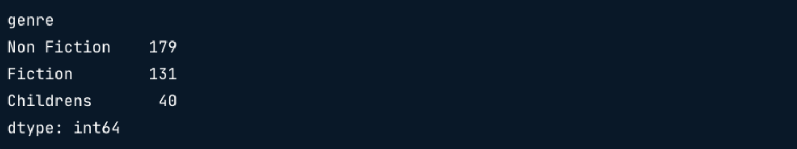
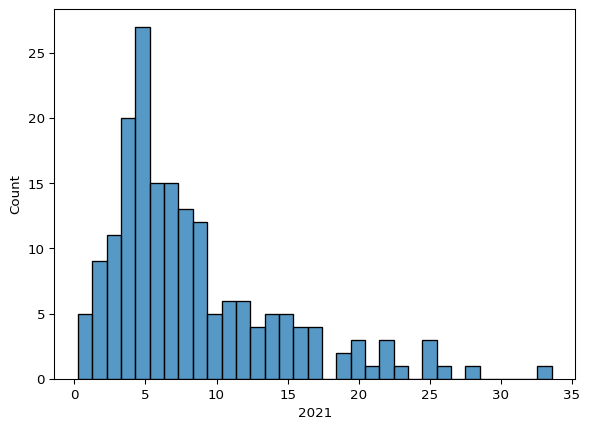
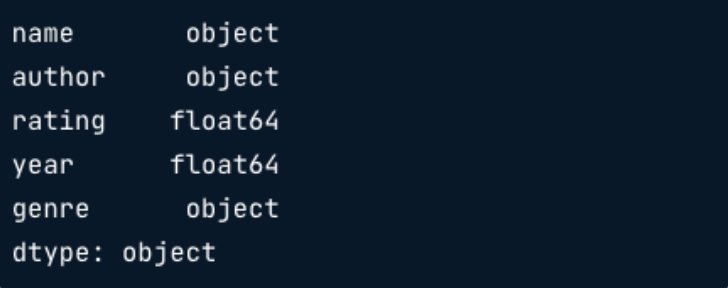
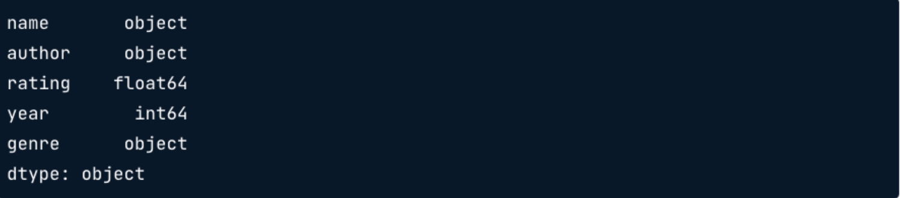
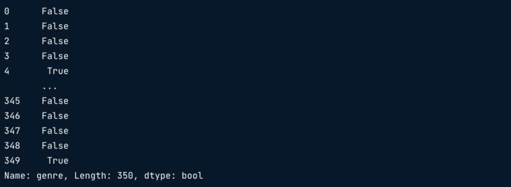
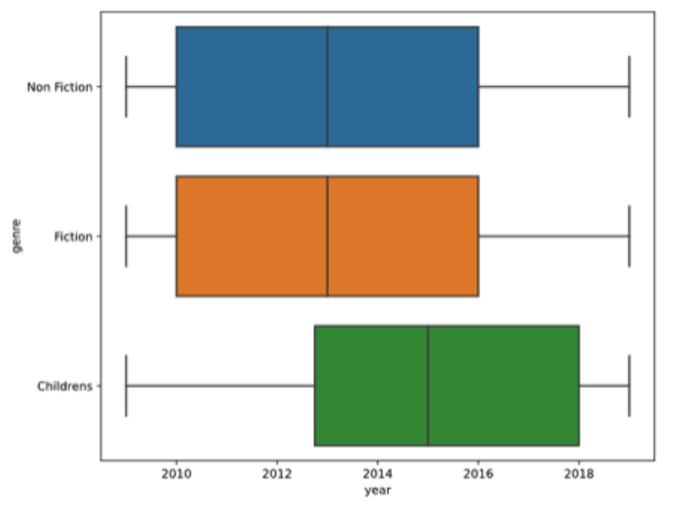
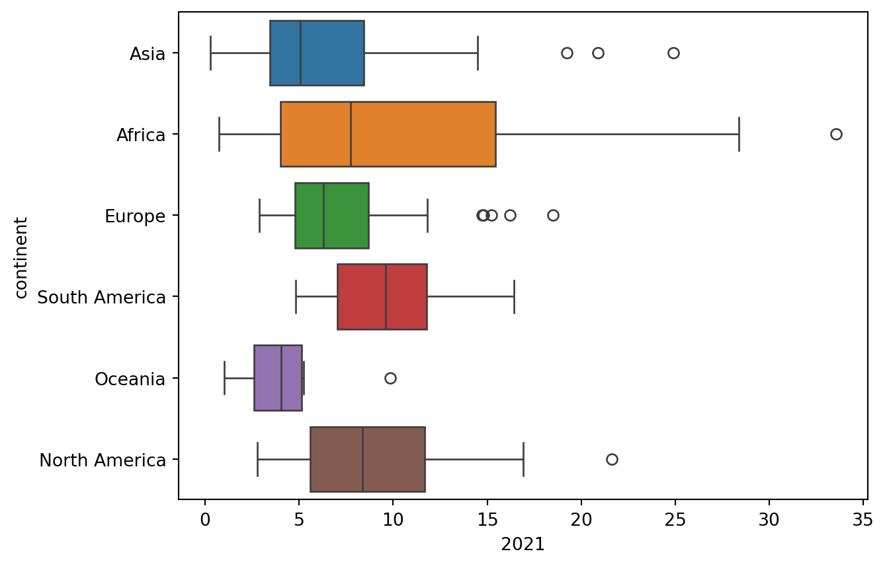
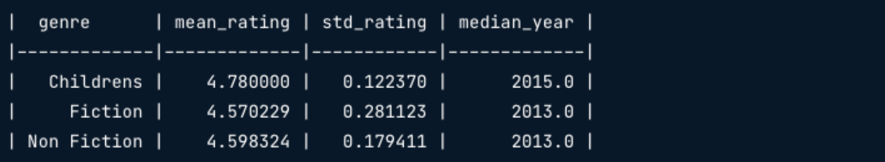
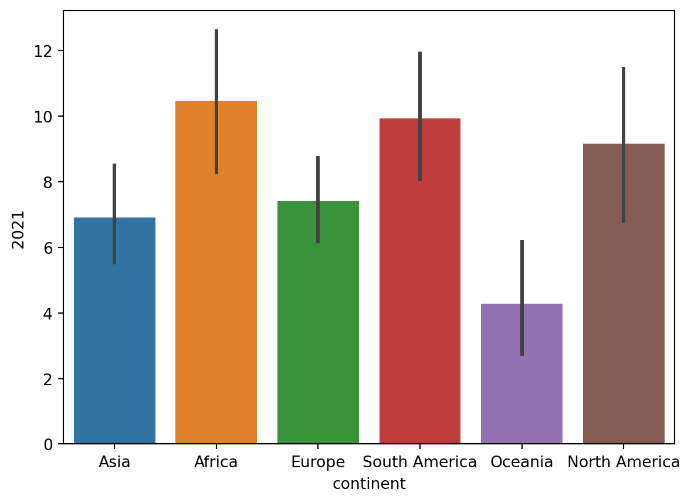

books = pd.read_csv('books.csv')
books.head()Conocer un conjunto de datos
¿Cuál el la mejor manera de abordar un nuevo conjunto de datos? Aprende a validar y resumir datos categóricos y numéricos y a crear visualizaciones Seaborn para comunicar tus conclusiones.
Exploración inicial
- Análisis Exploratorio de Datos
- Es el proceso de limpiar y revisar datos para:
- Obterner información (Estadística descriptiva, correlaciones)
- Genrar hipótesis
- Es el proceso de limpiar y revisar datos para:
- Una primera mirada con .head()

- Reuniendo más .info()
books.info()
- Una mirada cercana a las columnas categóricas
books.value_counts('genre')
- Columnas numéricas con .describe()
books.describe()
- Visualizando datos numéricos
import seaborn as sns
import matplotlib.pyplot as plt
sns.histplot(data=books, x='rating')
plt.show()
- Ajustando la anchura del bin
sns.histplot(data=books, x='rating', binwidth=.1)
plt.show()
Funciones para la exploración inicial
Estás investigando las tasas de desempleo en todo el mundo y te han dado un nuevo conjunto de datos con el que trabajar. Los datos se han guardado y cargado para ti como un DataFrame de pandas llamado unemployment. Nunca antes habías visto los datos, así que tu primera tarea es utilizar unas cuantas funciones de pandas para conocer estos nuevos datos.
import pandas as pd
ruta = './data/clean_unemployment.csv'
unemployment = pd.read_csv(ruta)Instrucciones
- Utiliza una función de pandas para imprimir las cinco primeras filas del DataFrame
unemployment.
# Print the first five rows of unemployment
print(unemployment.head()) country_code country_name continent 2010 2011 2012 \
0 AFG Afghanistan Asia 11.35 11.05 11.34
1 AGO Angola Africa 9.43 7.36 7.35
2 ALB Albania Europe 14.09 13.48 13.38
3 ARE United Arab Emirates Asia 2.48 2.30 2.18
4 ARG Argentina South America 7.71 7.18 7.22
2013 2014 2015 2016 2017 2018 2019 2020 2021
0 11.19 11.14 11.13 11.16 11.18 11.15 11.22 11.71 13.28
1 7.37 7.37 7.39 7.41 7.41 7.42 7.42 8.33 8.53
2 15.87 18.05 17.19 15.42 13.62 12.30 11.47 13.33 11.82
3 2.04 1.91 1.77 1.64 2.46 2.35 2.23 3.19 3.36
4 7.10 7.27 7.52 8.11 8.35 9.22 9.84 11.46 10.90 - Utiliza una función pandas para imprimir un resumen de los valores y tipos de datos de las columnas que no faltan del DataFrame
unemployment.
# Print a summary of non-missing values and data types in the unemployment DataFrame]
print(unemployment.info())<class 'pandas.core.frame.DataFrame'>
RangeIndex: 182 entries, 0 to 181
Data columns (total 15 columns):
# Column Non-Null Count Dtype
--- ------ -------------- -----
0 country_code 182 non-null object
1 country_name 182 non-null object
2 continent 177 non-null object
3 2010 182 non-null float64
4 2011 182 non-null float64
5 2012 182 non-null float64
6 2013 182 non-null float64
7 2014 182 non-null float64
8 2015 182 non-null float64
9 2016 182 non-null float64
10 2017 182 non-null float64
11 2018 182 non-null float64
12 2019 182 non-null float64
13 2020 182 non-null float64
14 2021 182 non-null float64
dtypes: float64(12), object(3)
memory usage: 21.5+ KB
None- Imprime las estadísticas de resument (recuento, media, desviación estándar, valores mínimo, máximo y cuartil) de cada columna numérica en
unemployment.
# Print summary statistics for numerical columns in unemployment
print(unemployment.describe()) 2010 2011 2012 2013 2014 2015 \
count 182.000000 182.000000 182.000000 182.000000 182.000000 182.000000
mean 8.409286 8.315440 8.317967 8.344780 8.179670 8.058901
std 6.248887 6.266795 6.367270 6.416041 6.284241 6.161170
min 0.450000 0.320000 0.480000 0.250000 0.200000 0.170000
25% 4.015000 3.775000 3.742500 3.692500 3.625000 3.662500
50% 6.965000 6.805000 6.690000 6.395000 6.450000 6.170000
75% 10.957500 11.045000 11.285000 11.310000 10.695000 10.215000
max 32.020000 31.380000 31.020000 29.000000 28.030000 27.690000
2016 2017 2018 2019 2020 2021
count 182.000000 182.000000 182.000000 182.000000 182.000000 182.000000
mean 7.925879 7.668626 7.426429 7.243736 8.420934 8.390879
std 6.045439 5.902152 5.818915 5.696573 6.040915 6.067192
min 0.150000 0.140000 0.110000 0.100000 0.210000 0.260000
25% 3.800000 3.690000 3.625000 3.487500 4.285000 4.335000
50% 5.925000 5.650000 5.375000 5.240000 6.695000 6.425000
75% 10.245000 10.315000 9.257500 9.445000 11.155000 10.840000
max 26.540000 27.040000 26.910000 28.470000 29.220000 33.560000 Ahora haz aprendido que unemployment contiene 182 filas de datos de países, incluyendo country_code, country_name, continent y porcentajes de desempleo desde 2010 hasta 2021. ¡Si miraste muy de cerca, podrías haber notado que a algunos países les falta información en la columna continent! Continuemos explorando estos datos en el próximo ejercicio.
Contar valores categóricos
Recordemos del ejercicio anterior que el DataFrame unemployment contiene 182 filas de datos de países que incluyen country_code, country_name, continent y porcentajes de desempleo de 2010 a 2021.
Ahora vas a explorar los datos categóricos contenidos en unemployment para comprender los datos que contiene relacionados con cada continente.
Instrucciones
- Utiliza un método para contar los valores asociados a cada
continenten el DataFrameunemployment.
# Count the values associated with each continent in unemployment
print(unemployment['continent'].value_counts())continent
Africa 53
Asia 47
Europe 39
North America 18
South America 12
Oceania 8
Name: count, dtype: int64¿Sabías que hay 23 países en América del Norte, que incluye países en el Caribe y América Central? Puede que hayas notado que América del Norte tiene 18 puntos de datos en el DataFrame unemployment, por lo que nos falta información de algunos de los países en nuestro conjunto de datos.
Desempleo mundial en 2021
¡Es hora de explorar algunos de los datos numéricos en unemployment! ¿Cuál fue el desempleo típico en un año determinado? ¿Cuál era la tasa de desempleo mínima y máxima, y cómo era la distribución de las tasas de desempleo en el mundo? Un histogrpama es una buena forma de hacerse una idea de las respuestas a estas preguntas.
Tu tarea en este ejercicio es crear un histograma que muestre la distribución de las tasas de paro mundiales en 2021.
Instrucciones
- Importa las bibliotecas de visualización necesarias
- Crea un histograma de la distribución de los porcentajes de desempleo de 2021 en todos los países en
unemployment; muestra un punto pocentual completo en cada casilla.
# Import the required visualization libraries
import seaborn as sns
import matplotlib.pyplot as plt
# Create a histogram of 2021 unemployment; show a full percent in each bin
sns.histplot(x='2021', data=unemployment, binwidth=1)
plt.show()
Parece que el desempleo en el 2021 se mantuvo alrededor del 3% al 8% para la mayoría de los países en el conjunto de datos, pero algunos países experimentaron un desempleo muy alto del 20% al 35%.
Validación de datos
- Validando los tipos de datos
books.dtypes
- Actualizando los tipos de datos
books['year'] = books['year'].astype(int)
books.dtypes
| Tipo | Nombre Python |
|---|---|
| String | str |
| Integer | int |
| Float | float |
| Dictionary | dict |
| List | list |
| Boolean | bool |
- Validando datos categóricos
books['genre'].isin(['Fiction', 'Non Fiction'])
Para validar los datos que no están en la lista
~books['genre'].isin(['Fiction', 'Non Fiction'])
Para filtrar el DataFrame por los valores en nuestra lista
books[books['genre'].isin(['Fiction', 'Non Fiction'])].head()
- Validando los datos numéricos
Para ver solo las columnas numéricas en un DataFrame:
books.select_dtypes('number').head()Para conocer un intervalo específico:
books['year'].min()
books['year'].max()
Se puede ver una imagen más detallada de la distribución de los datos, utilizando boxplot:
sns.boxplot(data=books, x='year')
plt.show()
También se puede ver los datos agrupados por una variable categórica.
sns.boxplot(data=books, x='year', y='genre')
plt.show()
Detectar tipos de datos
¡Se ha modificado una columna en el DataFrame unemployment y ahora tiene un tipo de datos incorrecto! Este tipo de datos te impedirá realizar una exploración y un análisis eficaces, por lo que tu tarea consiste en identificar qué columna tiene un tipo de datos incorrecto y, a continuación, corregirlo.
Instrucciones
Pregunta
- ¿Cuál de las siguientes columnas requiere una actualización de su tipo de datos?
print(unemployment.dtypes)country_code object
country_name object
continent object
2010 float64
2011 float64
2012 float64
2013 float64
2014 float64
2015 float64
2016 float64
2017 float64
2018 float64
2019 object
2020 float64
2021 float64
dtype: objectRespuestas posibles
- Actualiza el tipo de datos de la columna
2019deunemploymentafloat. - ¡Vuelve a imprimir el
dtypesdel DataFrameumemploymentpara comprobar que se ha actualizado el tipo de datos!
# Update the data type of the 2019 column to a float
unemployment['2019'] = unemployment['2019'].astype('float')
# Print the dtypes to check your work
print(unemployment.dtypes)country_code object
country_name object
continent object
2010 float64
2011 float64
2012 float64
2013 float64
2014 float64
2015 float64
2016 float64
2017 float64
2018 float64
2019 float64
2020 float64
2021 float64
dtype: objectCambiar el tipo de dato de la columna 2019 significa que ahora puedes realizar cálculos sobre ella, incluyendo validar su rango.
Validar continentes
Tu colega te ha informado de que los datos sobre el desempleo de los países de Oceanía no son fiables, y te gustaría identificar y excluir a estos países de tus datos de unemployment. ¡La función .isin() puede ayudarte con eso!
Tu tarea consiste en utilizar isin() para identificar los países que no están en Oceanía. Estos países deberían devolver True mientras que los países de Oceanía deberán devolver False. Esto te permitirá utilizar los resultados de isin() para filtrar rápidamente los países de Oceanía utilizando la indexación booleana.
Instrucciones
- Defina una Serie Booleana que describan si cada
continentestá o no fuera deOceanía; llama a esta Serienot_oceania.
# Define a Series describing whether each continent is outside of Oceania
not_oceania = ~unemployment['continent'].isin(['Oceania'])- Utiliza la indexación booleana para imprimir el DataFrame
unemploymentsin ninguno de los datos relacionados con los países de Oceanía.
# Define a Series describing whether each continent is outside of Oceania
not_oceania = ~unemployment['continent'].isin(['Oceania'])
# Print unemployment without records related to countries in Oceania
print(unemployment[not_oceania]) country_code country_name continent 2010 2011 2012 \
0 AFG Afghanistan Asia 11.35 11.05 11.34
1 AGO Angola Africa 9.43 7.36 7.35
2 ALB Albania Europe 14.09 13.48 13.38
3 ARE United Arab Emirates Asia 2.48 2.30 2.18
4 ARG Argentina South America 7.71 7.18 7.22
.. ... ... ... ... ... ...
175 VNM Vietnam Asia 1.11 1.00 1.03
178 YEM Yemen, Rep. Asia 12.83 13.23 13.17
179 ZAF South Africa Africa 24.68 24.64 24.73
180 ZMB Zambia Africa 13.19 10.55 7.85
181 ZWE Zimbabwe Africa 5.21 5.37 5.15
2013 2014 2015 2016 2017 2018 2019 2020 2021
0 11.19 11.14 11.13 11.16 11.18 11.15 11.22 11.71 13.28
1 7.37 7.37 7.39 7.41 7.41 7.42 7.42 8.33 8.53
2 15.87 18.05 17.19 15.42 13.62 12.30 11.47 13.33 11.82
3 2.04 1.91 1.77 1.64 2.46 2.35 2.23 3.19 3.36
4 7.10 7.27 7.52 8.11 8.35 9.22 9.84 11.46 10.90
.. ... ... ... ... ... ... ... ... ...
175 1.32 1.26 1.85 1.85 1.87 1.16 2.04 2.39 2.17
178 13.27 13.47 13.77 13.43 13.30 13.15 13.06 13.39 13.57
179 24.56 24.89 25.15 26.54 27.04 26.91 28.47 29.22 33.56
180 8.61 9.36 10.13 10.87 11.63 12.01 12.52 12.85 13.03
181 4.98 4.77 4.78 4.79 4.78 4.80 4.83 5.35 5.17
[174 rows x 15 columns]Validaste datos categóricos y usaste tu validación .isin() para excluir datos en los que no estabas interesado. Filtrar los datos que no necesitas al comienzo de tu proceso de EDA es una excelente manera de organizarte para la exploración que está por venir.
Rango de validación
Ahora es el momento de validar nuestros datos numéricos. En la lección anterior vimos, utilizando .describe(), que la mayor tasa de desempleo durante 2021 fue de casi el 34 %, mientras que la más baja estuvo justo por encima de cero.
Tu tarea en este ejercicio es obtener información mucho más detallada sobre el rango de los datos de unemployment utilizando el diagrama de caja de Seaborn, y también visualizarás el rango de las tasas de desempleo en cada continente para comprender las diferencias de rango geográfico.
Instrucciones
- Imprime las tasas de desempleo mínima y máximam en este orden, durante 2021.
- Crea un diagrama de caja de las tasas de desempleo de 2021 (en el eje x), desglosadas por continente (en el eje y).
# Print the minimum an maximum unemployment rates during 2021
print(unemployment['2021'].min(), unemployment['2021'].max())
# Create a boxplot of 2021 unemployment rates, broken down by continent
sns.boxplot(data=unemployment, x='2021', y='continent',
hue='continent', legend=False)
plt.show()0.26 33.56
Observa cómo varían los rangos de desempleo entre continentes. Por ejemplo, el percentil 50 de África es más bajo que el de América del Norte, pero el rango es mucho más amplio.
Resumen de datos
- Explorando grupo de datos
.groupby()grupo de datos por categoría.- Función de agregación indica cómo se resume un grupo de datos.
books.groupby('genre').mean()
Funciones de agregación
Suma:
.sum()Conteo:
.contMínimo:
.min()Máximo:
.max()Varianza:
.var()Desviación estándar:
.std()
Agregación de datos no agrupados
.agg()aplica funciones de agregación a través de un DataFramePor defecto agrega todas las filas de una columna determinada
Se suele utilizar cuando queremos más de una función
Solo lo aplica a las columnas numéricas
books.agg(['mean', 'std'])
- Especificando agregaciones para columnas
books.agg({'rating': ['mean', 'std'], 'year': ['median']})
- Nombrando columnas resumen
books.groupby('genre').agg(
mean_rating = ('rating', 'mean'),
std_rating = ('rating', 'std'),
median_year = ('year', 'median')
)
Visualizando resúmenes categoricos
- Calculan automáticamente la media de una variable cuantitativa
sns.barplot(data=books, x='genre', y='rating')
plt.show()
Resúmenes con .groupby() y .agg()
En este ejercicio, explorarás las medias y desviaciones estándar de los datos anuales de desempleo. En primer lugar, encontrarás las medias y desviaciones estándar independientemente del continente para observar las tendencias mundiales del desempleo. Después, comprobarás las tendencias del desempleo desglosadas por continente.
import pandas as pd
ruta = './data/clean_unemployment.csv'
unemployment = pd.read_csv(ruta)
print(unemployment.head()) country_code country_name continent 2010 2011 2012 \
0 AFG Afghanistan Asia 11.35 11.05 11.34
1 AGO Angola Africa 9.43 7.36 7.35
2 ALB Albania Europe 14.09 13.48 13.38
3 ARE United Arab Emirates Asia 2.48 2.30 2.18
4 ARG Argentina South America 7.71 7.18 7.22
2013 2014 2015 2016 2017 2018 2019 2020 2021
0 11.19 11.14 11.13 11.16 11.18 11.15 11.22 11.71 13.28
1 7.37 7.37 7.39 7.41 7.41 7.42 7.42 8.33 8.53
2 15.87 18.05 17.19 15.42 13.62 12.30 11.47 13.33 11.82
3 2.04 1.91 1.77 1.64 2.46 2.35 2.23 3.19 3.36
4 7.10 7.27 7.52 8.11 8.35 9.22 9.84 11.46 10.90 Instrucciones
- Imprime la media y las desviación estándar d elas tasas de paro de cada año (en ese orden).
# Print the mean and standard deviation of rates by year
print(unemployment[
['2010', '2011', '2012', '2013', '2014', '2015', '2016', '2017', '2018', '2019', '2020']
].agg(['mean', 'std'])) 2010 2011 2012 2013 2014 2015 2016 \
mean 8.409286 8.315440 8.317967 8.344780 8.179670 8.058901 7.925879
std 6.248887 6.266795 6.367270 6.416041 6.284241 6.161170 6.045439
2017 2018 2019 2020
mean 7.668626 7.426429 7.243736 8.420934
std 5.902152 5.818915 5.696573 6.040915 - Imprime la media y la desviación estándar (en ese orden) de las tasas de paro de cada año agrupadas por continente.
# Print yearly mean and standard deviation grouped by continent
print(unemployment[
['continent', '2010', '2011', '2012', '2013', '2014', '2015', '2016', '2017', '2018', '2019', '2020']
].groupby("continent").agg(['mean', 'std'])) 2010 2011 2012 \
mean std mean std mean std
continent
Africa 9.343585 7.411259 9.369245 7.401556 9.240755 7.264542
Asia 6.240638 5.146175 5.942128 4.779575 5.835319 4.756904
Europe 11.008205 6.392063 10.947949 6.539538 11.325641 7.003527
North America 8.663333 5.115805 8.563333 5.377041 8.448889 5.495819
Oceania 3.622500 2.054721 3.647500 2.008466 4.103750 2.723118
South America 6.870833 2.807058 6.518333 2.801577 6.410833 2.936508
2013 2014 ... 2016 \
mean std mean std ... mean
continent ...
Africa 9.132453 7.309285 9.121321 7.291359 ... 9.277547
Asia 5.852128 4.668405 5.853191 4.681301 ... 6.094894
Europe 11.466667 6.969209 10.971282 6.759765 ... 9.394615
North America 8.840556 6.081829 8.512222 5.801927 ... 7.941111
Oceania 3.980000 2.640119 3.976250 2.659205 ... 3.877500
South America 6.335000 2.808780 6.347500 2.834332 ... 7.230833
2017 2018 2019 \
std mean std mean std mean
continent
Africa 7.459439 9.284528 7.407620 9.237925 7.358425 9.264340
Asia 5.051796 6.171277 5.277201 6.090213 5.409128 5.949149
Europe 5.822793 8.359744 5.177845 7.427436 4.738206 6.764359
North America 5.503090 7.391111 5.326446 7.281111 5.253180 7.095000
Oceania 2.477866 3.872500 2.492834 3.851250 2.455893 3.773750
South America 3.052309 7.281667 3.398994 7.496667 3.408856 7.719167
2020
std mean std
continent
Africa 7.455293 10.307736 7.928166
Asia 5.254008 7.012340 5.699609
Europe 4.124734 7.470513 4.071218
North America 4.770490 9.297778 4.963045
Oceania 2.369068 4.273750 2.617490
South America 3.379845 10.275000 3.411263
[6 rows x 22 columns]Estos datos están bien resumidos, pero es un poco largo. ¿Qué pasaríasi quisieras enfocarte en un resumen de solo un año y hacerlo más legible? ¡Inténtalo en el siguiente ejercicio!
Agregaciones con nombre
Ya has visto cómo .groupby() y .agg() pueden combinarse para mostrar resúmenes para categorías. A veces, es útil nombrar nuevas columnas al agregar, para que se quede claro en la salida del código qué agregaciones se están aplicando y dónde.
Tu tarea consiste en crear un DataFrame llamado continent_summary que muestre una fila por cada continente. Las columnas del DataFram,e contendrán la tasa de paro media de cada continente en 2021, así como la desviación estándar de la tasa de empleo del 2021. Y por supuesto, ¡renombrarás las columnas para que su contenido quede claro!
Instrucciones
Crea una columna llamada
mean_rate_2021que muestre la tasa de paro media de 2021 para cada continente.Crea una columna llamada
std_rate_2021que muestre la desviación estándar de la tasa de paro de 2021 para cada continente.
continent_sumary = unemployment[
['continent', '2021']
].groupby('continent').agg(
# Create the mean_rate_2021 column
mean_rate_2021 = ('2021', 'mean'),
# Create the std_rate_2021 column
std_rate_2021 = ('2021', 'std'),
)
print(continent_sumary) mean_rate_2021 std_rate_2021
continent
Africa 10.473585 8.131636
Asia 6.906170 5.414745
Europe 7.414872 3.947825
North America 9.155000 5.076482
Oceania 4.280000 2.671522
South America 9.924167 3.611624El desempleo promedio de 2021 varió ampliamente por continente, y también lo hizo el desempleo dentro de esos continentes.
Visualizar resúmenes categóricos
Como has aprendido en este capítulo, Seaborn tiene muchas visualizaciones estupendas para la exploración, incluido un gráfico de barras para mostrar un valor medio agregado por categoría de datos.
En Seaborn, los gráficos de barras incluyen una barra vertical que indica el intervalo de confianza del 95 % para la media categórica. Como los intervalos de confianza se calculan utilizando tanto el número de valores como la variabilidad de esos valores, dan una indicación útil de hasta qué punto se puede confiar en los datos.
Tu tarea consiste en crear un diagrama de barras para visualizar las medias y los intervalos de confianza de las tasas de desempleo en los distintos continentes.
import matplotlib.pyplot as plt
import seaborn as snsInstrucciones
- Crea un diagrama de barras que muestre los continentes en el eje x y lsus respectivas tasas medias de desempleo en 2021 en el eje y.
# Create a bar plot of continents and their average unemployment
sns.barplot(data=unemployment, x='continent', y='2021',
hue='continent', legend=False)
plt.show()
Aunque Europa tiene un mayor desempleo promedio que Asia, también tiene un intervalo de confianza más pequeño para ese promedio, por lo que el valor promedio es más confiable.